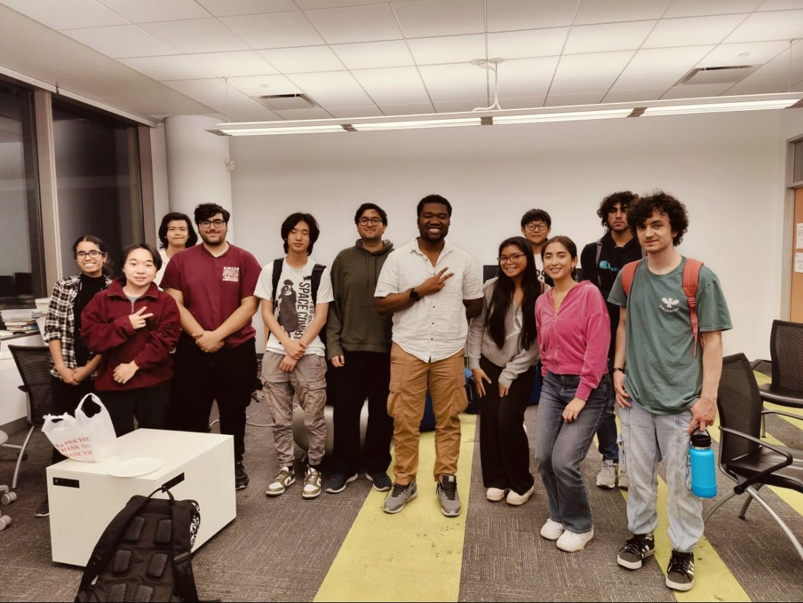

NBA 2024 playoff predictions
Regression and XGBoost model that identified all 2024 NBA playoff teams. Narrowed 45 candidate factors to the 5 that most affect win rate.
I'm Chien-Liang (Nika) Hsu, an AI engineer at Powertech Technology in Hsinchu, Taiwan. I build models that warn engineers before a wire bond fails. My background is statistics, from National Taipei University, with an exchange at Temple University in Philadelphia.
Wire bonding connects each chip to its package with gold or copper wire finer than a human hair. When a bond doesn't stick to its pad, a failure called NSOP (non-stick on pad), the machine stops and waits for an operator, costing throughput and sometimes yield.
At Powertech I'm building a predictive model that flags these failures before they happen, so engineers can act before the machine stops instead of after.
As part of my M.S. in Statistics at National Taipei University, I joined Temple University's exchange program in Philadelphia, Pennsylvania.
I took Time Series and Database Management Systems there. Both became everyday tools afterwards: time series for reading machine signals at Powertech, and databases for the SAP warehouse and ETL pipelines behind 10M+ production records at YoungOptics.
Outside class, I was part of the Temple Data Science Club.

My master's thesis, Convolutional MIL for Image Feature Extraction, works on multiple-instance learning (MIL).
In MIL an image is treated as a bag of patches. Labels exist only for the whole bag, so the model has to work out which patches carry the signal. I developed CMILR, a model that combines a convolutional neural network with regression, and derived its mathematical framework.
CMILR reached 98% classification accuracy on simulated data and on handwritten digits. Applied to COVID-19 data, it identified two potential features and gave medically actionable insights.
Schematic. Highlighted patches are the ones that drive the image-level prediction.
Regression and XGBoost model that identified all 2024 NBA playoff teams. Narrowed 45 candidate factors to the 5 that most affect win rate.
A book I wrote introducing core machine learning and statistical models, comparing classifiers on simulated data.
SinoPac × SHOPLINE loan solution built on deep learning.
Google Analytics Individual Qualification, Building Data Lakes on AWS, Fundamentals of Visualization with Tableau.
Python, R, SQL, XGBoost, SAP Analytics Cloud, UiPath, AWS, Tableau, LLM APIs.
Played on the National Taipei University basketball team. Currently learning Japanese.
Open to conversations about predictive maintenance, manufacturing data and applied machine learning.